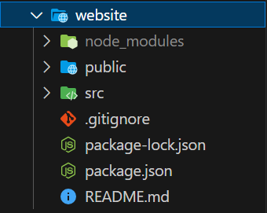

ReactJS Folder Structure
a typical react project follows a common Folder structure that organizes the codebase.
scr: this the main Folder where most of your project's code resides.
- index.js: The entry point of your application
- App.js: The root component that gets rendered in the browser.
- components: this Folder contains reuseable and smaller components used in the project
- pages: this Folder contains larger components that represent different pages or views of your application
- styles: CSS of styleing-related files, including global styles and component-specific styles.
- assets: static assets such as images, icons, or fonts used iin your application.
- utils: utility function or helper modules that are used throughout the project.
- services: this folder holds any services or API-related files.
public : This folder contains static assets that don't require processing, such as the HTML file.
node_modules : it is automatically created when you install dependencies.
package.json : This file lists the project's metadata and dependencies, including script for running various tasks.
package-lock.json (or yarn.lock) : These files are automatically generated and lock the versions of your installed dependencies, ensuring consistent builds across different machines.
gitignore : This files specifiles which files or dierctories should be ignored by version control (e.g.,Git)
README.md : A files containing information about the project.